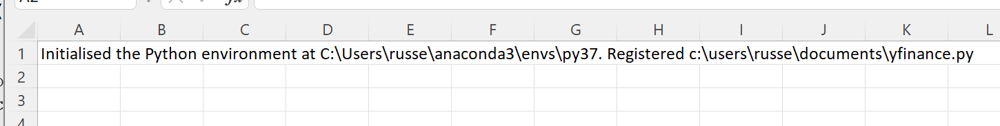
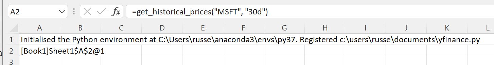

Loading Stock Prices from Yahoo! Finance¶
The Python yfinance package can be used to download prices from Yahoo! Finance (please read the legal disclaimers referenced at yfinance)
xlSlim makes it easy to use the yfinance package to download prices into Excel.
Warning
The pandas functionality shown requires a premium licence. See Licensing
We will use this Python code to download the prices.
# example of using yfinance package to source prices and other data for financial instruments
# pip install yfinance to get the package
import yfinance as yf
import pandas as pd
def get_historical_prices(ticker_name: str, period: str) -> pd.DataFrame:
assert (
len(ticker_name.split(" ")) == 1
), "get_historica_prices works with one ticker only"
tick = yf.Ticker(ticker_name)
return tick.history(period)
Note
All the Python code and Excel files shown are available from github in the xlslim-code-samples repo.
Save the Python code as a new file on your PC. I saved the file in my Documents folder.
Open Excel and enter this RegisterPyModule() formula (amending the location to match where you saved the file):
=RegisterPyModule("c:\users\russe\documents\yfinance.py","C:\Users\russe\anaconda3\envs\py37")
Note
yfinance is not available in the Python installation bundled with xlSlim. The Python module must be registered with an existing Python installation that has yfinance installed. See yfinance for installation details.
You should see a message similar to this confirming the module registration:
{kind=link}
The get_historical_prices() function is now available in Excel. Let’s load the last 30 days of MSFT prices:
=get_historical_prices("MSFT", "30d")
A cache object handle is returned to Excel. Internally xlSlim has put the pandas DataFrame into an in-memory cache.
{kind=link}
The ViewPyObject() can be used to view the data in Excel:
=ViewPyObject(A2)
{kind=link}
This example shows how neatly xlSlim handles pandas DataFrames.